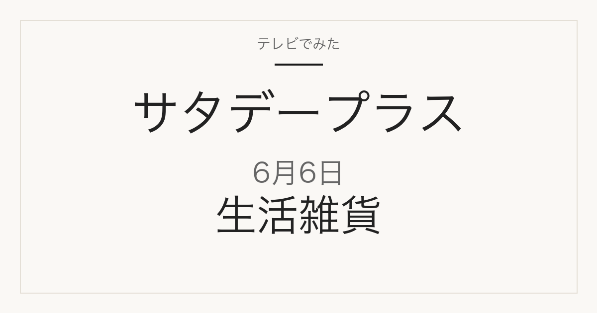

1位／番組掲載価格 490円
無印良品
シリコーン 調理スプーン

無印良品の自社商品で、無印良品の店舗や公式通販で扱われます。番組掲載と同じ単品です（無印良品公式楽天店、長さ約26cm、JAN 4550584376412）。楽天公式店の表示価格は590円（税込・2026-09-09 10:20確認）で、番組掲載の490円とは差があります。同シリーズの「スモール」（約25cm、JAN 4550584376429）は別商品で、そちらが490円のため価格だけで選ぶと取り違えます。
テレビ紹介商品の記録メディア
2026年6月6日（土）放送
「ひたすら試してランキング」で調査された4品

2026年6月6日放送のサタデープラス「ひたすら試してランキング」は生活雑貨ブランド4番勝負。1番勝負 シリコーンスプーン No.1は無印良品「シリコーン 調理スプーン」、2番勝負 ピーラー No.1はイケア「IKEA 365+ ヴェールデ ポテトピーラー」、3番勝負 ステンレスボトル No.1はニトリ「超保温ボトル N-HEATEX スクリュー (500ml)」、4番勝負 耐熱保存容器 No.1はKEYUCA「楽に洗えてフタごとレンジパック 600ml 4個セット グリーン」が1位でした。全4品の番組掲載価格は440円から1,990円です。このうち4品は楽天市場で販売ページを確認できました（販売単位が番組掲載と異なる場合があります）。
この記事には広告・アフィリエイトリンクが含まれます。順位・商品名・番組掲載価格は番組公式情報で確認しています。価格は2026年6月6日時点の番組調べで、現在の販売価格・在庫・送料は販売先で確認してください。容量・入数は商品名から読み取れる範囲で記載し、確認できないものは「未確認」としています。
番組の順位は番組独自の調査によるもので、当サイトの評価ではありません。
| 順位 | 商品名 | メーカー | 番組掲載価格 | 容量・入数 | 購入先 |
|---|---|---|---|---|---|
| 1位 | シリコーン 調理スプーン | 無印良品 | 490円 | 未確認 | 楽天市場（販売ページを確認） |
1位／番組掲載価格 490円
無印良品
無印良品の自社商品で、無印良品の店舗や公式通販で扱われます。番組掲載と同じ単品です（無印良品公式楽天店、長さ約26cm、JAN 4550584376412）。楽天公式店の表示価格は590円（税込・2026-09-09 10:20確認）で、番組掲載の490円とは差があります。同シリーズの「スモール」（約25cm、JAN 4550584376429）は別商品で、そちらが490円のため価格だけで選ぶと取り違えます。
| 順位 | 商品名 | メーカー | 番組掲載価格 | 容量・入数 | 購入先 |
|---|---|---|---|---|---|
| 1位 | IKEA 365+ ヴェールデ ポテトピーラー | イケア | 699円 | 未確認 | 楽天市場（販売ページを確認） |
1位／番組掲載価格 699円
イケア

イケアの自社商品で、イケアの店舗や公式通販で扱われます。番組掲載と同じ単品です（IKEA商品番号50175139、ブラック）。ただしIKEA公式店ではなく代行販売店（WEBYセレクション）の出品で、表示価格は1,703円（税込・2026-09-09 10:21確認）と番組掲載の699円より高めです。同名の「IKEA 365+ ヴェールデ ピーラー」(20163604)は別商品なので注意。
| 順位 | 商品名 | メーカー | 番組掲載価格 | 容量・入数 | 購入先 |
|---|---|---|---|---|---|
| 1位 | 超保温ボトル N-HEATEX スクリュー (500ml) | ニトリ | 1,990円 | 500ml | 楽天市場（販売ページを確認） |
1位／番組掲載価格 1,990円
ニトリ

商品名から読み取れる容量・入数は500mlです。ニトリの自社商品で、ニトリの店舗や公式通販で扱われます。番組掲載と同じ単品です（ニトリ公式楽天店、グレー）。ページ内は500ml／800mlの容量選択式で、番組掲載の500ml（商品コード2111200015072）は1,990円（税込・2026-09-09 10:20確認）と番組掲載価格と同じです。800ml（2111200015089）は2,490円で別サイズなので選び間違いに注意。
| 順位 | 商品名 | メーカー | 番組掲載価格 | 容量・入数 | 購入先 |
|---|---|---|---|---|---|
| 1位 | 楽に洗えてフタごとレンジパック 600ml 4個セット グリーン | KEYUCA | 440円 | 600ml・4個入り | 楽天市場（販売ページを確認） |
1位／番組掲載価格 440円
KEYUCA

商品名から読み取れる容量・入数は600ml・4個入りです。KEYUCAの自社商品で、KEYUCAの店舗や公式通販で扱われます。番組掲載と同じ4個セットです（KEYUCA公式楽天店）。ページ内は270ml／400ml／600mlの容量選択式で、番組掲載の600ml 4個セット（商品コード3300980）を選ぶ必要があります。いずれも440円（税込・2026-09-09 10:20確認）で番組掲載価格と同じ。フタの色は濃いグリーン2点＋薄いグリーン2点の組み合わせで、ブルーは完売とページに記載されています。
MBS「サタプラ」ひたすら試してランキング 人気の生活雑貨ブランド ひたすら試して4番勝負！（2026年6月6日放送）
順位・商品名・番組掲載価格は2026年6月6日時点の番組公式ページによります。MBS公式サイトは直近の放送回のみ公開しているため、この回の公式ページは現在閲覧できません。上のリンクはインターネットアーカイブに保存された公式ページのコピーです。価格は放送時点の番組調べで、現在の販売価格・在庫・送料は販売先で確認してください。
公開：2026年9月9日／最終更新：2026年9月9日